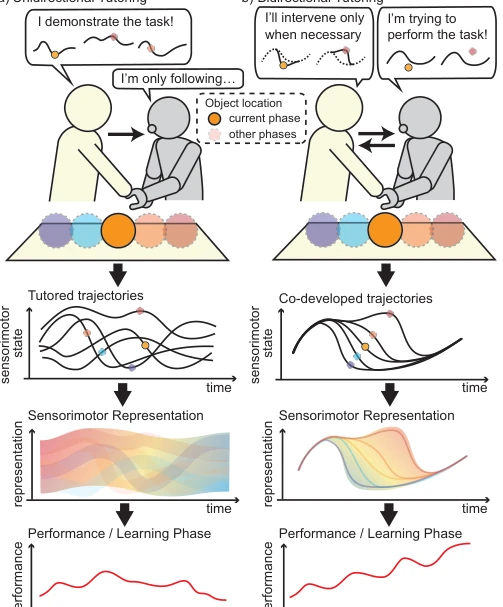
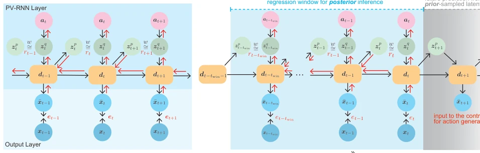
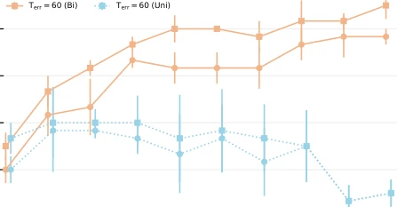
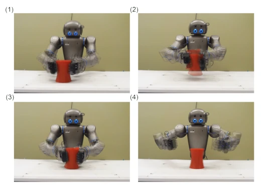
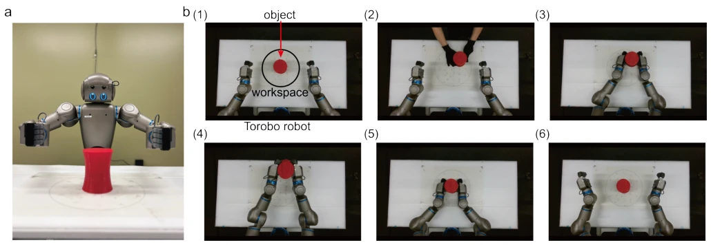
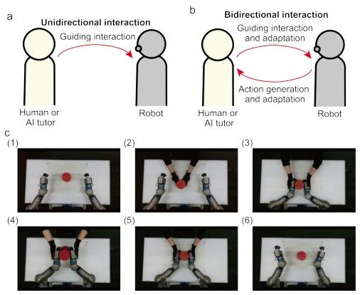
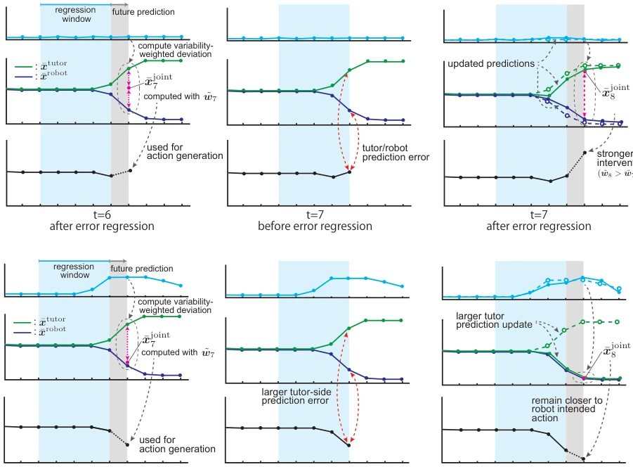
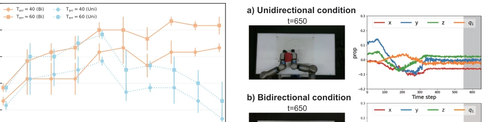
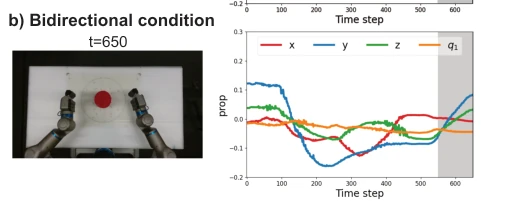
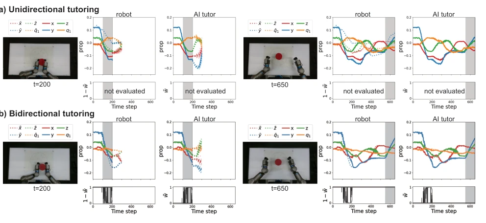

This paper attempts to forcibly apply the "bidirectional interaction" logic of infants learning to walk to robots, which is quite interesting. The authors did not follow the traditional path of imitation learning, but instead devised a "bidirectional tutoring" system, allowing the robot to move first and then be corrected by the tutor, rather than passively receiving instruction like a mute person. Using the Free Energy Principle (FEP) as the underlying architecture, combined with Generative Replay to solve the forgetting problem, the technical stack is quite advanced. However, the so-called "bidirectional" aspect in human experiments involved only one tutor, and the AI tutor's intervention strategy was relatively simplified, still far from true social interaction. The task was simply picking up and putting back objects; although it verified the hypothesis, it remains questionable how far the generalization ability can extend to more complex scenarios. Overall, it is a robust attempt in embodied learning, but do not expect it to directly serve coffee. Furthermore, the trajectory inconsistency problem caused by unidirectional teaching does exist, but whether bidirectional interaction can truly solve all generalization challenges still needs verification through more complex tasks.
Infants develop motor skills through intensive social interaction, which is a consensus in developmental psychology [1]–[3]; Vygotsky's scaffolding theory also emphasizes the critical role of social interaction in development [7], [8]. However, robot motion learning is often simplified as a unidirectional process, where robots passively receive demonstrations [13]–[15]. Existing motion teaching (such as force teaching) is often viewed as unidirectional transmission, ignoring the dynamic adaptation between tutor and learner [19]–[21]. This unidirectional perspective ignores how tutor intervention is influenced by the robot's prior behavior, thereby affecting trajectory structure and generalization ability. Existing research indicates that learning depends not only on whether the demonstration is successful but also on the consistency of sensorimotor patterns between demonstrations [13]–[15]. The paper points out that unidirectional teaching may lead to loose trajectory structures, hindering the formation of consistent sensorimotor representations. Therefore, studying how bidirectional interaction shapes interaction dynamics and supports stable developmental motor learning is key to solving the problems of poor generalization and inconsistent representation in current robot skill acquisition.

Fig. 1. Conceptual diagram of unidirectional and bidirectional tutoring in developmental motor learning. The upper interaction schematics illustrate how tutoring trajectories are generated in each condition, and the middle panels overlay the resulting trajectories across developmental phases. The speech bubbles contrast unidirectional tutoring, where the tutor demonstrates the task while the robot passively follows, with bidirectional tutoring, where the robot attempts the task and the tutor intervenes as needed. Colored circles in the workspace indicate object locations across developmental phases; orange denotes the current phase, and the other colors denote other phases. In the trajectory panels, colored dots indicate task-critical states required for successful task execution, such as
方法Method
整体框架基于预测编码启发的变分循环神经网络（PV-RNN），利用自由能原理（FEP）最小化变分自由能，实现感知、行动与学习的统一。核心流程分为发育阶段：每阶段包含一次辅导 episode 和模型训练。创新点在于：1) 双向辅导机制：机器人基于自身预测生成动作，导师（人或 AI）根据偏差介入，形成共同发展的轨迹，而非被动跟随；2) 生成式回放（Generative Replay）：为支持分阶段学习且不存储旧数据，从当前模型先验分布采样生成回放序列，与新课序列混合训练，缓解灾难性遗忘；3) AI 导师干预策略：基于预期运动变异性计算加权偏差，动态调整干预权重，实现上下文感知的介入。PV-RNN 层负责潜变量推断，输出层生成传感器运动预测，在线推理通过滑动回归窗口更新后验参数，确保实时性。
The overall framework is based on a Predictive Coding-inspired Variational Recurrent Neural Network (PV-RNN), utilizing the Free Energy Principle (FEP) to minimize variational free energy, achieving the unification of perception, action, and learning. The core process is divided into developmental stages: each stage includes one tutoring episode and model training. The innovations lie in: 1) Bidirectional tutoring mechanism: the robot generates actions based on its own predictions, the tutor (human or AI) intervenes based on deviations, forming a co-developed trajectory rather than passively following; 2) Generative Replay: to support staged learning without storing old data, replay sequences are generated by sampling from the current model's prior distribution, mixed with new episode sequences for training, alleviating catastrophic forgetting; 3) AI tutor intervention strategy: calculates weighted deviations based on expected motor variability, dynamically adjusts intervention weights, achieving context-aware intervention. The PV-RNN layer is responsible for latent variable inference, the output layer generates sensorimotor predictions, and online inference updates posterior parameters through a sliding regression window to ensure real-time performance.

Fig. 4. Illustration of the computational flow of the PV-RNN during training and online inference. a Training process. The model generates predictions over time through recurrent computation. At each time step, the reconstruction error et is computed from the prediction ¯xt and observation xt, while rt denotes the Kullback–Leibler divergence between the posterior zq t and prior zp t latent distributions. b Online inference with a shifting regression window. Posterior estimates are updated within the window through error regression, and the resulting one-step-ahead prediction ¯xt+1 is used for action generation. As time advances, the regression window shifts forward, and the same procedure is repeated. Black arrows indicate forward computation, whereas red arrows indicate error backpropagat
实验Experiments
实验在 Torobo 人形机器人上进行物体操作任务（抓取并放回）。对比单向与双向辅导，分 10 个发育阶段。首先用人类导师验证概念，随后用 AI 导师在受控条件下验证。评测指标包括成功率（基于空间误差阈值）、训练损失（变分自由能）及导师干预力度（额外扭矩）。结果显示，双向辅导在各阶段成功率均显著高于单向，后期甚至达到 90%（单向仅 10%）。双向条件下的训练损失更低，表明轨迹与先前动力学更兼容。此外，随着学习进行，人类导师的干预扭矩逐渐减少，证明机器人逐渐独立。AI 实验复现了该趋势，验证了交互模式而非导师身份是关键。
Experiments were conducted on the Torobo humanoid robot for object manipulation tasks (picking up and putting back). Comparing unidirectional and bidirectional tutoring, divided into 10 developmental stages. First, the concept was verified using a human tutor, followed by verification using an AI tutor under controlled conditions. Evaluation metrics include success rate (based on spatial error threshold), training loss (variational free energy), and tutor intervention intensity (additional torque). Results show that bidirectional tutoring had significantly higher success rates at each stage than unidirectional, reaching even 90% in later stages (unidirectional only 10%). Training loss was lower under bidirectional conditions, indicating trajectories were more compatible with prior dynamics. Furthermore, as learning progressed, the human tutor's intervention torque gradually decreased, proving the robot gradually became independent. The AI experiment replicated this trend, verifying that the interaction pattern rather than the tutor identity is key.

Fig. 5. Success rate across developmental phases for the unidirectional (Uni) and bidirectional (Bi) tutoring conditions. Data points represent the mean success rate across training sets A–C, and error bars indicate the standard error of the mean (SEM). Two spatial error thresholds are used, Terr=40 and 60.

Fig. 8. Example of variability in AI-tutor-generated trajectories under the same object-location condition. Panels (1)–(4) show overlaid snapshots from three repeated executions at representative time points: (1) reaching and grasping at t=200, (2) lift-up at t=400, (3) put-down at t=500, and (4) returns toward its initial posture at t=650. The snapshots illustrate that the trained AI tutor generated task-relevant movements with variability, rather than producing a single deterministic trajectory.
其他图片Other Figures

Fig. 2. Overview of experimental setups and task settings a Torobo humanoid robot. b Example of a successful task sequence: 1) A robot begins in a home posture with a red cylindrical object placed at the center of the workspace indicated by a black circle; 2) the experimenter moves the red object to a random position; 3) the robot begins to reach for and grasp the object; 4) the robot lifts up the object; 5) the robot places and releases the object at the original location 6) the robot returns toward its initial posture.

Fig. 3. Overview of tutoring setups a Diagram of unidirectional tutoring, where the human or AI tutor provides one-way guidance to the robot. b Diagram of bidirectional tutoring, where the robot generates actions based on its own predictions while the tutor intervenes as needed. c Example of a human-robot tutoring sequence. 1-2) The object is moved to a random position; 3-5) the tutor provides physical guidance for the robot to reach for, grasp, lift, and return the object to the center; 6) the robot returns toward its initial posture.

Fig. 9. Schematic illustration of AI-tutor intervention through online inference in the bidirectional condition. (a) Low expected movement variability case, where ν is small in the AI tutor model. (b) High expected movement variability case, where ν is large in the AI tutor model. At t=6 (left), after observing x1:6, the tutor and the robot generate their predicted actions, and the joint action is computed from these predictions. For a similar deviation between the robot’s intended action and the tutor’s prediction, the low-variability case yields a larger intervention weight ˜ w, so the joint action is drawn closer to the tutor’s intended action. In contrast, when ν is larger, the intervention weight becomes smaller, and the joint action remains closer to the robot’s intended action. At t

Fig. 10. Success rate across developmental phases in the AI tutoring experiment. Success rates are shown for the unidirectional (Uni) and bidi- rectional (Bi) tutoring conditions. Data points represent the mean success rate across training sets A-C, and error bars indicate the standard error of the mean (SEM). Two spatial error thresholds are used, Terr=40 and 60.

Fig. 11. Representative testing episode in the AI-tutoring experiment at Phase 10. Snapshots and corresponding proprioceptive trajectories are shown for the unidirectional and bidirectional conditions. The snapshots show the final state of the episode at t=650. The gray region indicates the regression window. In this representative episode, the unidirectional condition failed to complete the task: action generation remained near the same posture from around t=300 until the end of the episode, as reflected in the snapshot. In contrast, the bidirectional condition completed the task successfully, with the snapshot showing the robot returning toward the initial posture after placing the object at the designated return location.

Fig. 12. Representative examples of AI-tutoring dynamics at Phase 10. a Unidirectional conditions. b Bidirectional conditions. The examples were selected from the same object-position set. Snapshots are shown at two representative time points: during reaching and grasping (t=200) and at the end of the episode (t=650). In each snapshot, the left and right panels show the trajectories evaluated from the robot model and the AI tutor model, respectively. Solid lines indicate the trajectory observed by each model, corresponding to the tutor-imposed trajectory in the unidirectional condition and the co-developed trajectory in the bidirectional condition. Dotted lines indicate each model’s reconstructed trajectory before the current time point, and translucent dotted lines after the current time